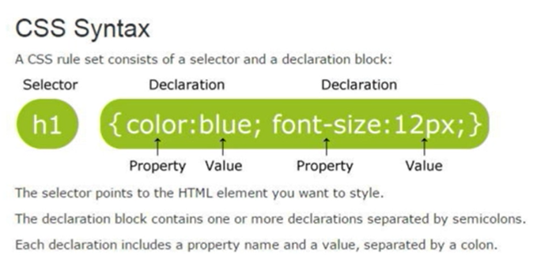

Review of HTML5, CSS3, JS
- HTML5 and CSS are markup langs, js is a script therefore Browsers don't need to compile code
- Browsers use the HTML doctype declaration to determine how to interpret the markup
- Make the User experience clear and smooth: Visually Appealing and Functional
- Think What's Intuitive? (nav, layout etc)
- Order of
<script> elements is important
- JS Objects and Functions need to be in Scope before they are used
- Use the
<noscript> element to alert Users with Browser that have scripting disabled
- IDE Integrated Development Environment (VisualStudio, NetBeans, Eclipse, VSCode
